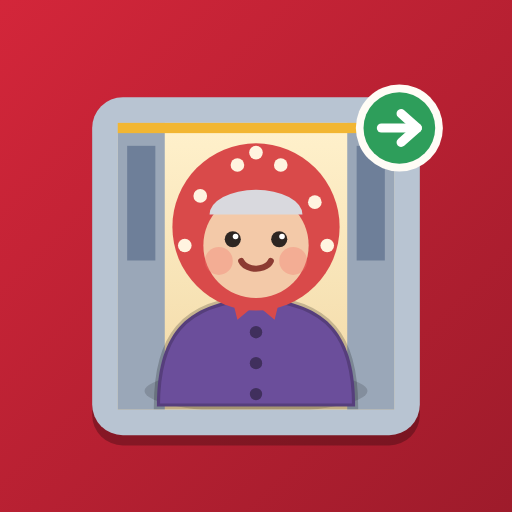
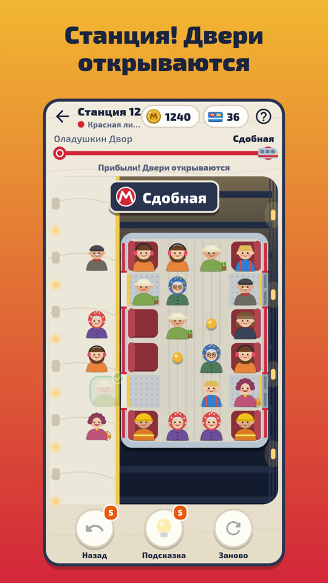

Осторожно, двери закрываются!
Поезд подъезжает к станции — успей провести выходящих к дверям!
Вагон метро — поле из клеток с пассажирами. Тем, кому выходить, — зелёная стрелка. Нажми на пассажира и на свободное место: он пройдёт туда. Поставь выходящих у дверей или в очередь друг за другом — и двери откроются, а пассажиры выпрыгнут на платформу.

- 300 станций на 20 линиях метро: пирожковая, дачная, зимняя, морская, сказочная…
- Знакомые попутчики: бабушки в платках, дедушка в кепке, рыбак с удочкой, тётя с клетчатой сумкой.
- Новое на каждой линии: поручни, тележки, спящие пассажиры, «уступи место».
- Без спешки: таймера нет, а если не успел — машинист подождёт.
- Поезд дня, задания, подсказки и отмена хода.
- Играй без интернета, на русском и английском.